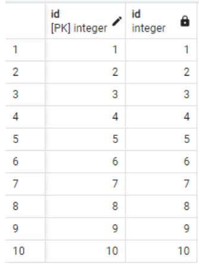

1. ¿Cuándo son "iguales" dos geometrías?
Determinar si dos geometrías son iguales no es tan simple como parece. A simple vista, dos polígonos pueden representar el mismo barrio, pero internamente pueden diferir en el orden de sus vértices, la precisión de las coordenadas o su estructura. PostGIS ofrece varias funciones para evaluar la igualdad desde diferentes perspectivas.
En este módulo, exploraremos tres enfoques fundamentales para comparar geometrías, usando datos de la localidad de Los Mártires en Bogotá.
1.1. Igualdad Exacta: `ST_OrderingEquals`
Esta es la forma más estricta de igualdad. Devuelve true solo si dos geometrías tienen exactamente los mismos vértices en el mismo orden y dirección. Es muy rigurosa y poco utilizada en la práctica, ya que dos geometrías que representan la misma forma pueden haber sido digitalizadas de manera diferente.
Ejemplo: Comparar si los polígonos de los barrios son exactamente iguales.
SELECT a."BARRIO" AS barrio_a, b."BARRIO" AS barrio_b,
CASE
WHEN ST_OrderingEquals(a.geom, b.geom) THEN 'Exactamente Igual'
ELSE 'No Exactamente Igual'
END AS comparacion
FROM "BARRIOS" AS a, "BARRIOS" AS b
WHERE a."BARRIO" = 'Diana Carolina'
LIMIT 5;Como es de esperar, un barrio solo será "exactamente igual" a sí mismo. Cualquier otra comparación resultará en false.
1.2. Igualdad Espacial: `ST_Equals`
Esta es la función de igualdad más útil y común. Devuelve true si dos geometrías ocupan exactamente el mismo espacio, sin importar el orden de sus vértices o cómo fueron construidas. Se enfoca en la equivalencia espacial pura.
Es clave para la validación de datos, la detección de duplicados y la verificación de la integridad topológica.
Ejemplo: Verificar si hay vías duplicadas que son espacialmente idénticas.
SELECT a.id AS id_via_a, b.id AS id_via_b
FROM "VIAS" AS a, "VIAS" AS b
WHERE ST_Equals(a.geom, b.geom)
AND a.id < b.id; -- Para evitar comparar una vía consigo misma y no repetir paresSi esta consulta devuelve resultados, significa que hay geometrías de vías duplicadas en la base de datos, un posible problema de calidad de datos.
1.3. Igualdad de Bounding Box: Operador `~=`
El operador ~= no compara las geometrías en sí, sino sus cajas delimitadoras (bounding boxes). Devuelve true si las cajas delimitadoras de las dos geometrías son idénticas.
Este operador es menos preciso que ST_Equals, ya que dos geometrías diferentes pueden tener la misma caja delimitadora. Sin embargo, puede ser útil para encontrar geometrías que ocupan una extensión similar.
Ejemplo: Encontrar incidentes que ocurrieron en la misma ubicación (tienen la misma "caja delimitadora", que para un punto es el punto mismo).
SELECT a.id AS id_incidente_a, b.id AS id_incidente_b
FROM "INCIDENTES" AS a, "INCIDENTES" AS b
WHERE a.id < b.id AND a.geom ~= b.geom
LIMIT 10;
En el caso de los puntos, ~= y ST_Equals son funcionalmente equivalentes. El resultado de esta consulta nos permite identificar puntos donde se concentran múltiples incidentes, lo cual es clave para el análisis de patrones de riesgo y la planificación urbana.
2. Usos y Aplicaciones de la Igualdad Espacial
Las funciones de igualdad son herramientas fundamentales para garantizar la calidad y eficiencia del análisis geográfico. Sus principales usos son:
- Control de Calidad de Datos: Permiten identificar errores, redundancias o inconsistencias en los datos espaciales.
- Detección de Duplicados: Son esenciales para encontrar registros duplicados que pueden representar eventos críticos o errores en la captura de datos.
- Validación de Información: Ayudan a verificar si dos geometrías de diferentes fuentes representan realmente la misma entidad en el mundo real (por ejemplo, dos versiones del límite de un barrio).
- Optimización de Consultas: Aunque menos común, saber que dos geometrías son iguales puede ayudar a evitar operaciones espaciales costosas en consultas complejas.